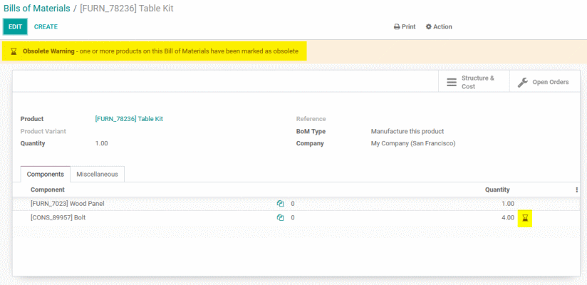

Note: This App is also compatible with Odoo Online
Note: - This App may require changes for your particular organization. Discuss your requirements with your Odoo Advisor or an Odoo Partner to understand the best way to leverage this kind of functionality.
Decrease the cost of Obsolete Products
Up to 25% of Inventory costs are related to obsolete Inventory! How are you managing and communicating product obselecence?
Proactively complete obsolescence plans
Smart Buttons and filters help your Users quickly locate any Inventory Transfers, Bills of Materials and Manufacturing Orders that may need attention.
Reactively identify obsolete products
Warnings and visual cues help Users quickly understand if any of the Documents they are processing still reference obsolete products.

Core Features that can also help
Other featuresets of Odoo that can be used to decrease the cost of obsolete inventory include: documenting obselecence plans via the chatter on each product; forecasting of demand via the Replenishment Menu; Reordering Rules; and using PLM to provide visibility into the product design and/or engineering process.